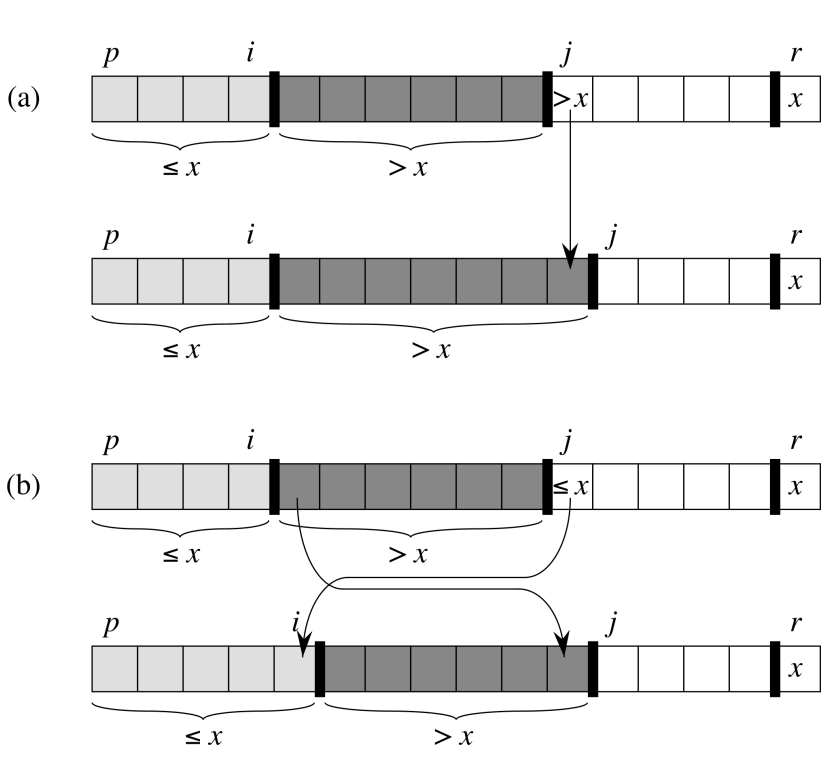

QUICKSORT(A,p,r)
if p < r
q = PARTITION(A,p,r)
QUICKSORT(A,p,q-1)
QUICKSORT(A,q+1,r)
PARTITION(A,p,r)
x = A[r]
i = p-1
for j = p to r-1
if A[j] <= x
i = i + 1
exchange A[i] with A[j]
exchange A[i+1] with A[r]
return i + 1

The proof of correctness for Quicksort is actually two proofs, a proof that Partition does the right thing and a proof that Quicksort does the right thing.
The proof of correctness for Partition is a fairly standard proof involving a loop invariant. The appropriate invariant is
A[p..i] ≤ x and A[i+1..j-1] > x
The text does a very good job of working out the details of that proof of correctness, so I refer you to that.
As for the correctness of Quicksort itself, we now have to contend with something completely new: how to produce a proof of correctness for a recursive algorithm. The proof technique is surprisingly simple and straightforward.
Theorem Quicksort(A,p,r) can correctly sort A[p..r] in ascending order.
Proof The proof is a proof by induction on the length of the array, |r - p + 1|: